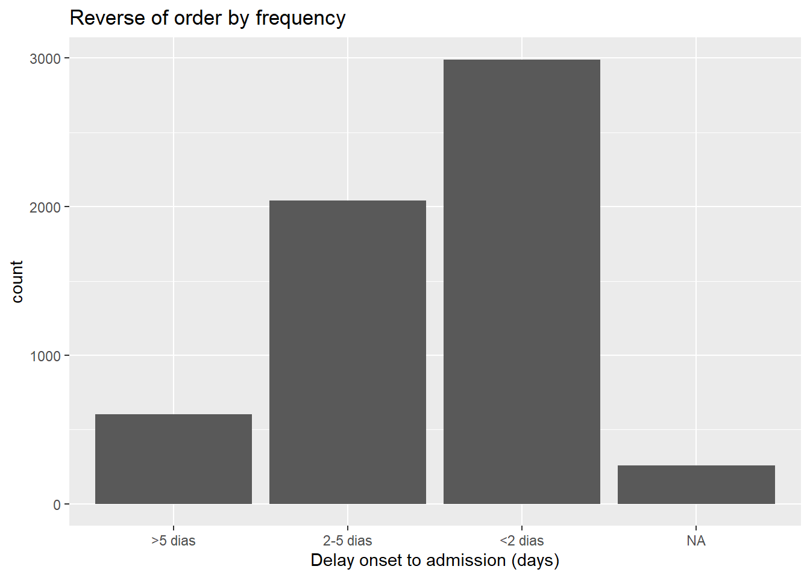
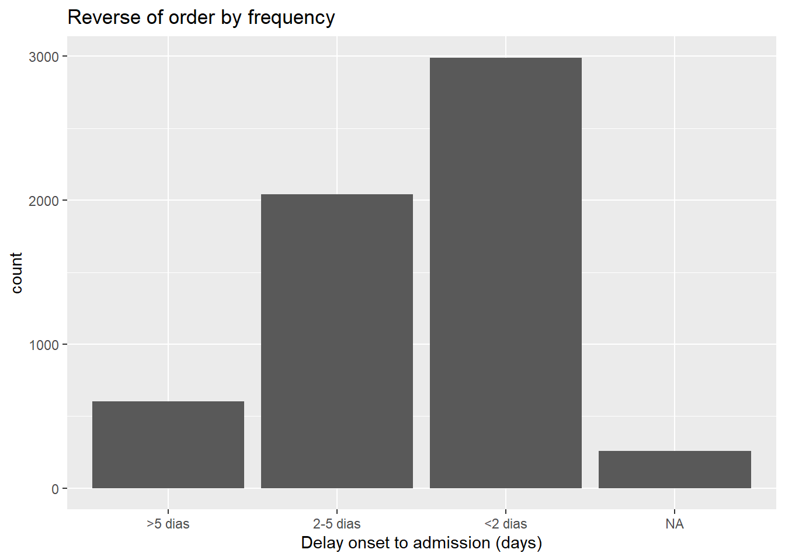

11 Fatores

No R, os fatores são uma classe de dados que permitem categorias ordenadas com um conjunto fixo de valores possíveis.
Normalmente, você converteria uma coluna de caractere ou classe numérica em um fator se quiser definir uma ordem intrínseca para os valores (“níveis”) para que eles possam ser exibidos de forma não alfabética em gráficos e tabelas. Outro uso comum de fatores é padronizar as legendas dos gráficos para que não flutuem se certos valores estiverem temporariamente ausentes dos dados.
Esta página demonstra o uso de funções do pacote forcats (um nome curto para “For categorical variables” - “para variáveis categóricas”) e algumas funções do R base. Também abordamos o uso de lubridate e aweek para casos de fatores especiais relacionados a semanas epidemiológicas (epiweeks).
Uma lista completa das funções do forcats pode ser encontrada online aqui. Abaixo, demonstramos alguns dos mais comuns.
11.1 Preparação
Carregar pacotes
Este trecho de código mostra o carregamento de pacotes necessários para as análises. Neste manual, enfatizamos o p_load() do pacman, o qual instala o pacote se necessário e o carrega para uso. Você também pode carregar pacotes instalados com library() do R base. Veja a pagina em Introdução ao R para mais informações sobre pacotes R.
pacman::p_load(
rio, # importar/exportar
here, # diretório
lubridate, # trabalhando com datas
forcats, # fatores
aweek, # criar epiweeks com níveis de fatores automático
janitor, # tabelas
tidyverse # dados mgmt e viz
)Importe os dados
Importamos o conjunto de dados de casos de uma simulação de epidemia de Ebola. Se você quiser acompanhar, clique para baixar o “clean” linelist (as .rds file). Importe seus dados com a função import() do pacote rio package (o pacote aceita muitos tipos de arquivo como .xlsx, .rds, .csv - veja a página Importar e exportar para detalhes).
# importar seu conjunto de dados
linelist <- import("linelist_cleaned.rds")Nova variável categórica
Para demonstração nesta página, usaremos um cenário comum - a criação de uma nova variável categórica.
Observe que se você converter uma coluna numérica em fator, não será capaz de calcular estatísticas numéricas sobre ela.
Criar coluna
Usamos a coluna existente days_onset_hosp (dias desde o início dos sintomas até a admissão hospitalar) e criamos uma nova coluna delay_cat classificando cada linha em uma das várias categorias. Nós fazemos isso com a função do dplyr case_when(), que aplica critérios lógicos sequencialmente (lado direito) a cada linha e retorna o valor do lado esquerdo correspondente para a nova coluna delay_cat. Leia mais sobre case_when() em Limpeza de dados e principais funções.
Padrão da ordem dos valores
Conforme criado com case_when(), a nova coluna delay_cat é uma coluna categórica da classe Caractere - ainda não é um fator. Assim, em uma tabela de frequência, vemos que os valores exclusivos aparecem por padrão em uma ordem alfanumérica - uma ordem que não faz muito sentido intuitivo:
table(linelist$delay_cat, useNA = "always")##
## <2 dias >5 dias 2-5 dias <NA>
## 2990 602 2040 256Da mesma forma, se fizermos um gráfico de barra, os valores também aparecem nesta ordem no eixo x (consulte a página O básico o ggplot para mais informações sobre o ggplot2 - o pacote de visualização mais comum no R).

11.2 Converter para fator
Para converter um caractere ou coluna numérica para classe fator, você pode usar qualquer função do pacote forcats (muitos são detalhados abaixo). Eles serão convertidos para fator e, em seguida, também realizarão ou permitirão certa ordenação dos níveis - por exemplo, usar fct_relevel() permite que você especifique manualmente a ordem dos níveis. A função as_factor() simplesmente converte a classe sem quaisquer recursos adicionais.
A função do R base factor() converte uma coluna em fator e permite que você especifique manualmente a ordem dos níveis, como um vetor de caracteres para seu argumento levels =.
Abaixo usamos mutate() e fct_relevel() para converter a coluna delay_cat de classe caractere para classe fator. A coluna delay_cat é criada na seção Preparação acima.
linelist <- linelist %>%
mutate(delay_cat = fct_relevel(delay_cat))Os “valores” únicos nesta coluna são agora considerados “níveis” do fator. Os níveis têm uma ordem, que pode ser exibida com a função do R base levels(), ou, alternativamente, visualizada em uma tabela de contagem via table() do R base ou tabyl() do janitor. Por padrão, a ordem dos níveis será alfanumérica, como antes. Observe que NA não é um nível de fator.
levels(linelist$delay_cat)## [1] "<2 dias" ">5 dias" "2-5 dias"A função fct_relevel() tem a utilidade adicional de permitir que você especifique manualmente a ordem dos níveis. Basta escrever os valores dos níveis em ordem, entre aspas, separados por vírgulas, conforme mostrado abaixo. Observe que a grafia deve corresponder exatamente aos valores. Se você quiser criar níveis que não existem nos dados, use fct_expand() ao invés).
linelist <- linelist %>%
mutate(delay_cat = fct_relevel(delay_cat, "<2 days", "2-5 days", ">5 days"))## Warning: There was 1 warning in `mutate()`.
## ℹ In argument: `delay_cat = fct_relevel(delay_cat, "<2 days", "2-5 days", ">5
## days")`.
## Caused by warning:
## ! 3 unknown levels in `f`: <2 days, 2-5 days, and >5 daysAgora podemos ver que os níveis estão ordenados, conforme especificado no comando anterior, em uma ordem sensata.
levels(linelist$delay_cat)## [1] "<2 dias" ">5 dias" "2-5 dias"Agora, a ordem do gráfico também faz um sentido mais intuitivo.

11.3 Adicionar ou remover níveis
Adicionar
Se você precisar adicionar níveis a um fator, você pode fazer isso com fct_expand(). Basta escrever o nome da coluna seguido pelos novos níveis (separados por vírgulas). Tabulando os valores, podemos ver os novos níveis e as contagens zero. Você pode usar table() do R base, ou tabyl() do janitor:
linelist %>%
mutate(delay_cat = fct_expand(delay_cat, "Not admitted to hospital", "Transfer to other jurisdiction")) %>%
tabyl(delay_cat) # print table## delay_cat n percent valid_percent
## <2 dias 2990 0.50781250 0.5308949
## >5 dias 602 0.10224185 0.1068892
## 2-5 dias 2040 0.34646739 0.3622159
## Not admitted to hospital 0 0.00000000 0.0000000
## Transfer to other jurisdiction 0 0.00000000 0.0000000
## <NA> 256 0.04347826 NANota: há uma função especial no forcats para adicionar facilmente valores ausentes (NA) como um nível. Consulte a seção abaixo sobre Valores ausentes.
Remover
Se você usar fct_drop(), os níveis “não usados” com contagem zero serão retirados do conjunto de níveis. Os níveis que adicionamos acima (“Not admitted to a hospital” - Não admitido em um hospital) existem como um nível, mas nenhuma linha realmente possui esses valores. Portanto, eles serão eliminados aplicando fct_drop() na nossa coluna de fator:
## delay_cat n percent valid_percent
## <2 dias 2990 0.50781250 0.5308949
## >5 dias 602 0.10224185 0.1068892
## 2-5 dias 2040 0.34646739 0.3622159
## <NA> 256 0.04347826 NA11.4 Ajuste a ordem dos níveis
O pacote forcats oferece funções úteis para ajustar facilmente a ordem dos níveis de um fator (após uma coluna ser definida como classe fator):
Essas funções podem ser aplicadas a uma coluna de fator em dois contextos:
- Para a coluna no data frame, como de costume, para que a transformação esteja disponível para qualquer uso subsequente dos dados
- Dentro de um gráfico, de modo que a alteração seja aplicada apenas dentro do gráfico
Manualmente
Esta função é usada para ordenar manualmente os níveis dos fatores. Se usada em uma coluna sem fator, a coluna será primeiro convertida para classe fator.
Entre parênteses, primeiro forneça o nome da coluna do fator e, em seguida, forneça:
- Todos os níveis na ordem desejada (como um vetor de caracteres
c()), ou
- Um nível e seu posicionamento corrigido usando o argumento
after =
Aqui está um exemplo de redefinição da coluna delay_cat (que já é da classe Factor) e especificando toda a ordem de níveis desejada.
# redefine a ordem dos níveis dos fatores
linelist <- linelist %>%
mutate(delay_cat = fct_relevel(delay_cat, c("<2 days", "2-5 days", ">5 days")))## Warning: There was 1 warning in `mutate()`.
## ℹ In argument: `delay_cat = fct_relevel(delay_cat, c("<2 days", "2-5 days", ">5
## days"))`.
## Caused by warning:
## ! 3 unknown levels in `f`: <2 days, 2-5 days, and >5 daysSe você quiser mover apenas um nível, você pode especificá-lo sozinha para fct_relevel() e dar um número ao argumento after = para indicar onde na ordem ele deveria estar. Por exemplo, o comando abaixo muda “<2 dias” para a segunda posição:
# redefinir a ordem dos níveis
linelist %>%
mutate(delay_cat = fct_relevel(delay_cat, "<2 days", after = 1)) %>%
tabyl(delay_cat)Dentro de um gráfico
Os comandos do forcats podem ser usados para definir a ordem dos níveis no data frame ou apenas dentro de um gráfico. Usando o comando para “envolver” o nome da coluna dentro do comando de plotagem ggplot() você pode reverter / reordenar / etc, assim, a transformação só se aplicará a esse gráfico.
Abaixo, dois gráficos são criados com ggplot() (consulte a página O básico o ggplot). No primeiro, a coluna delay_cat é mapeada para o eixo x do gráfico, com sua ordem de nível padrão como nos dados da linelist. No segundo exemplo, ele é inserido em fct_relevel() e a ordem é alterada no gráfico.
## Warning: There was 1 warning in `mutate()`.
## ℹ In argument: `delay_cat = fct_relevel(delay_cat, c("2-5 days", "<2 days", ">5
## days"))`.
## Caused by warning:
## ! 3 unknown levels in `f`: 2-5 days, <2 days, and >5 days
# Ordem alfanumérica padrão - sem ajuste no ggplot
ggplot(data = linelist)+
geom_bar(mapping = aes(x = delay_cat))
# Ordem dos níveis dos fatores ajustada dentro do ggplot
ggplot(data = linelist)+
geom_bar(mapping = aes(x = fct_relevel(delay_cat, c("<2 days", "2-5 days", ">5 days"))))Observe que o título padrão do eixo x agora é bastante complicado - você pode reescrever este título com o argumento labs() do ggplot2.
Inverter
É bastante comum que você queira inverter a ordem dos níveis. Simplesmente envolva o fator com fct_rev().
Observe que se você deseja reverter apenas uma legenda do gráfico, mas não os níveis reais dos fatores, pode fazer isso com guides() (consulte Dicas para o ggplot).
Por frequência
Para ordenar pela frequência com que o valor aparece nos dados, use fct_infreq(). Quaisquer valores ausentes (NA) serão incluídos automaticamente no final, a menos que sejam convertidos para um nível explícito (veja essa seção). Você pode inverter a ordem envolvendo em seguida com fct_rev().
Esta função pode ser usada em um ggplot(), conforme mostrado abaixo.
# ordenando por frequência
ggplot(data = linelist, aes(x = fct_infreq(delay_cat)))+
geom_bar()+
labs(x = "Delay onset to admission (days)",
title = "Ordered by frequency")
# inverter frequência
ggplot(data = linelist, aes(x = fct_rev(fct_infreq(delay_cat))))+
geom_bar()+
labs(x = "Delay onset to admission (days)",
title = "Reverse of order by frequency") 

Pela aparência
Use fct_inorder() para definir a ordem dos níveis para corresponder à ordem de aparecimento nos dados, começando da primeira linha. Isso pode ser útil se você primeiro organizar os dados cuidadosamente por meio do arrange() no data frame e, em seguida, usar isso para definir a ordem dos fatores.
Pela estatística de resumo de outra coluna
Você pode usar fct_reorder() para ordenar os níveis de uma coluna por uma estatística de resumo de outra coluna. Visualmente, isso pode resultar em gráficos agradáveis, onde as barras / pontos sobem ou descem de forma constante no gráfico.
Nos exemplos abaixo, o eixo x é delay_cat, e o eixo y é a coluna numérica ct_blood (valor do limite do ciclo). Os gráficos de caixa mostram a distribuição do valor CT por grupo delay_cat. Queremos ordenar os gráficos de caixa em ordem crescente pelo valor de CT mediano do grupo.
No primeiro exemplo abaixo, a ordem padrão de nível alfanumérico é usada. Você pode ver que as alturas do box plot estão confusas e não em uma ordem específica. No segundo exemplo, a coluna delay_cat (mapeada para o eixo x) foi agrupada em fct_reorder(), a coluna ct_blood é fornecida como o segundo argumento e “median” (mediana) é fornecido como o terceiro argumento (você também pode usar “max”, “mean”, “min”, etc). Portanto, a ordem dos níveis de delay_cat agora refletirá os valores médios de CT crescentes de cada valor de CT médio dos grupos presentes em delay_cat. Isso se reflete no segundo gráfico - os gráficos de caixa foram reorganizados para ascender. Observe como NA (ausente) aparecerá no final, a menos que seja convertido para um nível explícito.
# boxplots ordenados para os níveis originais dos fatores
ggplot(data = linelist)+
geom_boxplot(
aes(x = delay_cat,
y = ct_blood,
fill = delay_cat))+
labs(x = "Delay onset to admission (days)",
title = "Ordered by original alpha-numeric levels")+
theme_classic()+
theme(legend.position = "none")
# boxplots ordenados pelo valor médio de CT
ggplot(data = linelist)+
geom_boxplot(
aes(x = fct_reorder(delay_cat, ct_blood, "median"),
y = ct_blood,
fill = delay_cat))+
labs(x = "Delay onset to admission (days)",
title = "Ordered by median CT value in group")+
theme_classic()+
theme(legend.position = "none")Observe que neste exemplo acima não há etapas necessárias antes da função ggplot() - o agrupamento e os cálculos são todos feitos dentro do comando do ggplot.
Por valor “final”
Use fct_reorder2() para gráficos de linha agrupados. Ele ordena os níveis (e, portanto, a legenda) para alinhar com a ordem vertical das linhas no “final” do gráfico. Tecnicamente falando, ele “ordena pelos valores y associados aos maiores valores x”.
Por exemplo, se você tiver linhas mostrando contagens de casos por hospital ao longo do tempo, você pode aplicar fct_reorder2() ao argumento color = dentro do aes(), de modo que a ordem vertical dos hospitais que aparecem na legenda se alinhe com a ordem das linhas no extremidade final do gráfico. Leia mais na documentação online.
epidemic_data <- linelist %>% # comece com a linelist
filter(date_onset < as.Date("2014-09-21")) %>% # limite a data para clareza visual
count( # obter a contagem dos casos por semana e por hospital
epiweek = lubridate::floor_date(date_onset, "week"),
hospital
)
ggplot(data = epidemic_data)+ # inicie o gráfico
geom_line( # faça as linhas
aes(
x = epiweek, # eixo-x epiweek
y = n, # altura é o número de casos por semana
color = fct_reorder2(hospital, epiweek, n)))+ # dados agrupados e coloridos por hospital, com fator de ordem por altura no final do gráfico
labs(title = "Factor levels (and legend display) by line height at end of plot",
color = "Hospital") # change legend title11.5 Valores ausentes
Se você tiver valores NA em sua coluna de fatores, poderá convertê-los facilmente em um nível nomeado, como “Missing” (ausentes) com fct_explicit_na(). Por padrão, os valores NA são convertidos para “(Missing)” no final da ordenação dos nível. Você pode ajustar o nome do nível com o argumento na_level =.
A seguir, esta operação é realizada na delay_cat e uma tabela é exibida com tabyl() contendo NA convertido para “Missing delay”.
linelist %>%
mutate(delay_cat = fct_explicit_na(delay_cat, na_level = "Missing delay")) %>%
tabyl(delay_cat)## delay_cat n percent
## <2 dias 2990 0.50781250
## >5 dias 602 0.10224185
## 2-5 dias 2040 0.34646739
## Missing delay 256 0.0434782611.6 Combine os níveis
Manualmente
Você pode ajustar a exibibição dos níveis manualmente com fct_recode(). Essa função é similar a função recode() do dplyr (veja Limpeza de dados e principais funções), mas permite a criação de novos níveis de fator. Se você usar simplesmente o recode() em um fator, novos valores recodificados serão rejeitados, a menos que já tenham sido definidos como níveis permitidos.
Essa ferramenta também pode ser usada para “combinar” níveis, atribuindo vários níveis ao mesmo valor recodificado. Só tome cuidado para não perder informações! Considere fazer essas etapas de combinação em uma nova coluna (não sobrescrever a coluna existente).
fct_recode() tem uma sintaxe diferente de recode(). recode() usa OLD = NEW, enquanto fct_recode() usa NEW = OLD.
Os níveis atuais de delay_cat são:
## Warning: There was 1 warning in `mutate()`.
## ℹ In argument: `delay_cat = fct_relevel(delay_cat, "<2 days", after = 0)`.
## Caused by warning:
## ! 1 unknown level in `f`: <2 days
levels(linelist$delay_cat)## [1] "<2 dias" ">5 dias" "2-5 dias"Os novos níveis são criados usando a sintaxe fct_recode(column, "new" = "old", "new" = "old", "new" = "old") e exibidos:
linelist %>%
mutate(delay_cat = fct_recode(
delay_cat,
"Less than 2 days" = "<2 days",
"2 to 5 days" = "2-5 days",
"More than 5 days" = ">5 days")) %>%
tabyl(delay_cat)## Warning: There was 1 warning in `mutate()`.
## ℹ In argument: `delay_cat = fct_recode(...)`.
## Caused by warning:
## ! Unknown levels in `f`: <2 days, 2-5 days, >5 days## delay_cat n percent valid_percent
## <2 dias 2990 0.50781250 0.5308949
## >5 dias 602 0.10224185 0.1068892
## 2-5 dias 2040 0.34646739 0.3622159
## <NA> 256 0.04347826 NAAqui, eles são combinados manualmente com fct_recode(). Observe que nenhum erro foi gerado na criação de um novo nível “Less than 5 days” (Menos de 5 dias) .
linelist %>%
mutate(delay_cat = fct_recode(
delay_cat,
"Less than 5 days" = "<2 days",
"Less than 5 days" = "2-5 days",
"More than 5 days" = ">5 days")) %>%
tabyl(delay_cat)## delay_cat n percent valid_percent
## <2 dias 2990 0.50781250 0.5308949
## >5 dias 602 0.10224185 0.1068892
## 2-5 dias 2040 0.34646739 0.3622159
## <NA> 256 0.04347826 NAReduzir para “Outro”
Você pode usar fct_other() para atribuir manualmente níveis de fator a um nível chamado “Outros”. Abaixo, todos os níveis da coluna hospital, aside from “Port Hospital” and “Central Hospital”, are combined into “Other”. exceto “Port Hospital” e “Central Hospital”, são combinados em “Other”. Você pode fornecer um vetor para keep =, ou drop =. Você pode alterar a exibição do nível “Outro” com other_level =.
linelist %>%
mutate(hospital = fct_other( # ajustar níveis
hospital,
keep = c("Port Hospital", "Central Hospital"), # manter esses separados
other_level = "Other Hospital")) %>% # Todos os outros como "Other Hospital"
tabyl(hospital) # exiba a tabela## hospital n percent
## Central Hospital 454 0.07710598
## Port Hospital 1762 0.29925272
## Other Hospital 3672 0.62364130Reduzir por frequência
Você pode combinar os níveis do fator menos frequentes automaticamente usando fct_lump().
Para “agrupar” muitos níveis de baixa frequência em um grupo “Outro”, siga um destes procedimentos:
- Defina
n =como o número de grupos que deseja manter. Os n níveis mais frequentes serão mantidos e todos os outros serão combinados em “Outros”.
- Defina
prop =como a proporção de frequência limite para os níveis acima dos quais você deseja manter. Todos os outros valores serão combinados em “Outro”.
Você pode alterar a exibição do nível “Outro” com other_level =. Abaixo, todos, exceto os dois hospitais mais frequentes, são combinados em “Other Hospital” (Outro hospital).
linelist %>%
mutate(hospital = fct_lump( # ajuste os níveis
hospital,
n = 2, # mantenha os 2 níveis superiores
other_level = "Other Hospital")) %>% # todos os outros como "Other Hospital"
tabyl(hospital) # exiba a tabela## hospital n percent
## Ausente 1469 0.2494905
## Port Hospital 1762 0.2992527
## Other Hospital 2657 0.451256811.7 Mostrar todos os níveis
Um benefício de usar fatores é padronizar a aparência das legendas e tabelas do gráfico, independentemente de quais valores estão realmente presentes em um conjunto de dados.
Se você estiver preparando muitas figuras (por exemplo, para várias jurisdições), você desejará que as legendas e tabelas apareçam de forma idêntica, mesmo com variação nos níveis de conclusão ou composição de dados.
Em gráficos
Em uma figura ggplot(), simplesmente adicione o argumento drop = FALSE na função de escala relevante scale_xxxx(). Todos os níveis de fator serão exibidos, independentemente de estarem presentes nos dados. Se seus níveis de coluna de fator são exibidos usando fill =, então em scale_fill_discrete() você inclui drop = FALSE, conforme mostrado abaixo. Se seus níveis são exibidos com x = (para o eixo x), você deve fornecer color = ou size = para a função scale_color_discrete() ou para scale_size_discrete(), respectivamente.
Este exemplo é um gráfico de barras empilhadas das categorias por idade e por hospital. Adicionar scale_fill_discrete(drop = FALSE) garante que todas as faixas etárias apareçam na legenda, mesmo se não estiverem presentes nos dados.
ggplot(data = linelist)+
geom_bar(mapping = aes(x = hospital, fill = age_cat)) +
scale_fill_discrete(drop = FALSE)+ # mostra todos os grupos de idade na legenda, mesmo aqueles não presentes
labs(
title = "Todas as faixas etárias aparecerão na legenda, mesmo se não estiverem presentes nos dados")Em tabelas
Ambas as funções table() do R base e tabyl() do janitor mostrarão todos os níveis de fator (mesmo os níveis não utilizados).
Se você usar count() ou summarise() do dplyr para fazer uma tabela, adicione o argumento .drop = FALSE para incluir contagens para todos os níveis do fator, mesmo aqueles não usados.
Leia mais na página Tabelas descritivas, ou no documento do scale_discrete, ou na documentação do count(). Você pode ver outro exemplo na página Rastreamento de contatos.
11.8 Epiweeks (semanas epidemiológicas)
Consulte a ampla discussão sobre como criar semanas epidemiológicas na página Agrupamento de dados.
Consulte também a página Trabalhando com datas para obter dicas sobre como criar e formatar semanas epidemiológicas.
Epiweeks em um gráfico
Se seu objetivo é criar epiweeks para exibir em um gráfico, você pode fazer isso simplesmente com o pacote lubridate e função floor_date(), conforme explicado na página Agrupamento de dados. Os valores retornados serão da classe Data com formato AAAA-MM-DD. Se você usar esta coluna em um gráfico, as datas irão naturalmente ordenar corretamente, e você não precisa se preocupar com os níveis ou com a conversão para a classe Fator. Veja o histograma ggplot() das datas de início abaixo.
Nesta abordagem, você pode ajustar a exibição das datas em um eixo com scale_x_date(). Consulte a página em Curvas epidêmicas para obter mais informações. Você pode especificar um formato de exibição “strptime” para o argumento date_labels = da função scale_x_date(). Esses formatos usam marcadores “%” e são abordados na página Trabalhando com datas. Use “% Y” para representar um ano de 4 dígitos e “% W” ou “% U” para representar o número da semana (semanas de segunda ou domingo, respectivamente).
linelist %>%
mutate(epiweek_date = floor_date(date_onset, "week")) %>% # criando uma coluna de semanas
ggplot()+ # iniciando o ggplot
geom_histogram(mapping = aes(x = epiweek_date))+ # histograma da data de início
scale_x_date(date_labels = "%Y-W%W") # ajustar a exibição das datas para YYYY-WWw
Epiweeks nos dados
No entanto, se o seu objetivo na transformação para fator não é gerar um gráfico, você pode abordar isso de duas maneiras:
- Para um controle preciso sobre a exibição, converta no lubridate a coluna epiweek (YYYY-MM-DD) para o formato de exibição desejado (YYYY-WWw) dentro do próprio data frame e, em seguida, converta-o para a classe Fator.
Primeiro, use format() do R base para converter a exibição de data de YYYY-MM-DD para YYYY-Www (consulte a página Trabalhando com datas). Neste processo, a classe será convertida em caractere. Em seguida, converta de caractere para classe Fator com factor().
linelist <- linelist %>%
mutate(epiweek_date = floor_date(date_onset, "week"), # cria semanas epidemiológicas - epiweeks (YYYY-MM-DD)
epiweek_formatted = format(epiweek_date, "%Y-W%W"), # Converter para mostrar (YYYY-WWW)
epiweek_formatted = factor(epiweek_formatted)) # Converter para fator
# Mostrar níveis
levels(linelist$epiweek_formatted)## [1] "2014-W13" "2014-W14" "2014-W15" "2014-W16" "2014-W17" "2014-W18" "2014-W19"
## [8] "2014-W20" "2014-W21" "2014-W22" "2014-W23" "2014-W24" "2014-W25" "2014-W26"
## [15] "2014-W27" "2014-W28" "2014-W29" "2014-W30" "2014-W31" "2014-W32" "2014-W33"
## [22] "2014-W34" "2014-W35" "2014-W36" "2014-W37" "2014-W38" "2014-W39" "2014-W40"
## [29] "2014-W41" "2014-W42" "2014-W43" "2014-W44" "2014-W45" "2014-W46" "2014-W47"
## [36] "2014-W48" "2014-W49" "2014-W50" "2014-W51" "2015-W00" "2015-W01" "2015-W02"
## [43] "2015-W03" "2015-W04" "2015-W05" "2015-W06" "2015-W07" "2015-W08" "2015-W09"
## [50] "2015-W10" "2015-W11" "2015-W12" "2015-W13" "2015-W14" "2015-W15" "2015-W16"PERIGO: Se você colocar as semanas à frente dos anos (“Www-YYYY”) (“% W-% Y”), a ordem de nível alfanumérico padrão estará incorreta (por exemplo, 01-2015 estará antes de 35-2014) . Pode ser necessário ajustar manualmente a ordem, o que seria um processo longo e doloroso.
-
Para uma exibição padrão rápida, use o pacote aweek e sua função
date2week(). Você pode definir o dia do início da semana porweek_start =e, se definirfactor = TRUEa coluna de saída é um fator ordenado. Como bônus, o fator inclui níveis para todas as semanas possíveis no intervalo - mesmo se não houver casos naquela semana.
df <- linelist %>%
mutate(epiweek = date2week(date_onset, week_start = "Monday", factor = TRUE))
levels(df$epiweek)Veja a página Trabalhando com datas para mais informações sobre aweek. O pacote também oferece a função reversa week2date().
11.9 Recursos
R para a página de Ciência de Dados em factors
vinheta do pacote aweek